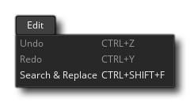
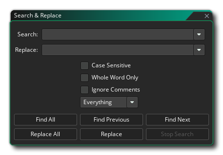
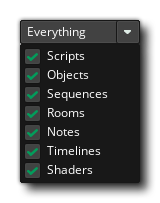

The edit menu is where you can use the general edition tools of
the GameMaker Studio 2 interface. The available options are:
- Undo - Undo an action.
- Redo - Redo a previous action.
- Search and replace - This will open a search window
which permits you to search through your entire code (including
room creation code, scripts, and events) for a given input - see
below for further information.
When you select Search and Replace from the Edit
menu, it will open the following window: 
You can use this to search through all the scripted assets in
your game, including room code, event code, scripts and shaders.
When searching, you can type in a new search term in the box at the
top, or you can click the arrow icon to the right to open a list of
previously searched for terms. You also have the option to give a
replacement term that will be used to replace the initial search
term, and this too has an option to use a previously used replace
string from the arrow button on the right.
Searches can be general or you can refine them using the options
below the search term inputs:
- You can choose to make the search case sensitive, in
which case it will only include words that exactly match the search
string case, ie: searching for "My_Var" without this option and you
will get results with "my_var", "mY_VAR", or "My_Var", but with
this option checked only "My_Var" will be included in the search
results.
- You can choose to only include search results that include the
whole word only, in which case any results that include the
search term but aren't an exact match will be ignored, ie: a search
for "game" without this checked will show up things like the
function "game_end()" or variables like "game_state", while
checking this and doing the search will only show results that are
"game" itself.
- You can choose to have the search ignore comments. When
this is checked, any comments in your code that contain the search
term will simply be ignored and not shown in the output
results.
- You can apply a filter on the search results based on
the different asset types in the asset browser. By default this is
set to "Everything", but clicking on this will open the following
menu where you can check or uncheck assets to be included in the
search: 
Once you have given a search (and optionally a replace) term and
set up the search options, you can use the different buttons at the
bottom to choose how to perform the search and any actions to take.
These buttons are:
- Find All: Find all the search terms and show them in the
output window.
- Find Previous: Find the previous instance of the search
term. This will open the asset containing the reference in the
workspace (if it's not already open) and pan to it.
- Find Next: Find the next instance of the search term.
This will open the asset containing the reference in the workspace
(if it's not already open) and pan to it.
- Replace All: This will perform a search for the given
term with the options set and also replace it in the assets with
the new replace term you have specified.
- Replace: This will replace the currently selected term
in the current editor where it's highlighted with the selected
replace term.
- Stop Search: Stop the current search if one is in
progress.
All results from using the Search / Replace window will be shown
in the Search
Output Window at the bottom of the IDE. Each result can be
double-clicked to open the asset with the term in the current
workspace and pan to it, ready for editing.